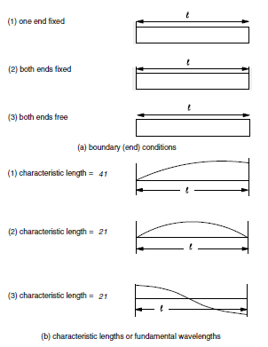

固有振动模态
对于许多问题，重要频率与体系的固有振动模态有关。此类问题的例子包括土坝等地表结构的地震分析，或地下开挖的动力分析。
对于这些问题，与固有振动模态相应的基本频率 \(f\) 为
其中：
\(C\) = 与振动模态相应的传播速度；以及
\(\gamma\) = 最长波长。
对于弹性连续体系，波的传播速度 \(C_p\) 对 \(p\) 波由 \(C_p = [(K + 4/3\ G) / \rho]^{1/2}\) 给出，对 \(s\) 波由 \(C_s = (G/\rho)^{1/2}\) 给出，其中 \(K\) = 体积模量，\(G\) = 剪切模量，\(\rho\) = 密度。
最长波长、特征长度或基本波长取决于边界条件。考虑一根长度为 1 的实心杆，其边界条件如下图所示（(a) 部分）。情况 (1)、(2) 和 (3) 的基本振型如 (b) 部分所示。
若杆件的剪切运动产生最低固有模态，则在前述方程中采用 \(C_s\)；否则，若平行于杆件轴线的运动产生最低固有模态，则采用 \(C_p\)。

图 1：不同端部条件下杆件基本波长的比较。
算例（引自 Cundall 等，1979，第 71–73 页）
在节理刚度极高的极限情况下，块体集合体在静力和动力上都应类似于连续介质。考虑八个方形可变形块体置于刚性基座上的问题。可以处理三个问题：无侧限柱体、受压的受限柱体和承受剪切的柱体。
通过在 \(x\) 方向或 \(z\) 方向施加重力对柱体加载。对于动力情况，质量阻尼为零，刚度比例阻尼如下：
临界阻尼分数 = 0.1
频率 = 10.0
受限压缩情况通过约束竖直边界上的侧向位移来建模，从而阻止块体的侧向变形。对于无侧限压缩，不约束侧向位移。对于受剪切的柱体，约束所有边界上的竖直运动。其他属性为：
| 体积模量 | \(K\) = 1.5 × 104 | 用于压缩试验 |
| 剪切模量 | \(G\) = 0.428562 × 104 | 用于压缩试验 |
| 泊松比 | 0.4 | 用于压缩试验 |
| 体积模量 | \(K\) = 1.0 × 104 | 用于剪切试验 |
| 剪切模量 | \(G\) = 1.0 × 104 | 用于剪切试验 |
| density | \(\rho\) = 1.0 | |
| 施加的重力 | \(g_y\) = -1.0 | 用于压缩试验 |
| \(g_y\) = 0.1 | 用于剪切试验 | |
| 柱体高度 | \(L\) = 800 | |
| 柱体宽度 | \(W\) = 100 | |
| 块体数量 | \(n\) = 8 |
适用于各种变形模式的模量如下。
| 受限压缩 | 无侧限压缩 | 剪切 |
|---|---|---|
| \(K + (4/3)\ G\) | \(4 G\ \biggl[ {{(1/3)\ G + K} \over {K + (4/3)\ G}} \biggr]\) | \(G\) |
| （平面应变，杨氏模量） | ||
| 2.5714 × 104 | 1.4286 × 104 | 1.0 × 104 |
表 3（Table 3） 比较了理论周期与计算得到的（3DEC）固有振动周期。固有振动周期的理论值按如下公式计算
固有周期 \(T = 4 L\ \sqrt{(\rho / E^*)}\)
其中 \(E^*\) 为从 表 2（Table 2） 中选取的相应模量。
| 受限压缩 | 无侧限压缩 | 剪切 | |
|---|---|---|---|
| 理论值 | 19.96 | 26.77 | 32.00 |
| 3DEC | 20.47 | 27.83 | 32.24 |
这些问题各自的数据文件列出如下。
数据文件 - 受限压缩
;-----------------------------------------------------------------------
; 弹性柱的固有周期：约束压缩
;-----------------------------------------------------------------------
model new
model title "Natural periods of an Elastic Column: Confined"
model config dynamic
model large-strain on
;几何形状
block create brick -50,50 -50,50 -400,400
block cut joint-set dip 0 dip-direction 180 ori 0,0,0 spac 100 num = 7
; 网格单元
block zone generate edgelength 200
block zone cmodel assign el
block zone prop bulk 2e4 shear 0.428562e4 dens 1
; 节理
block contact jmodel assign el
block contact prop stiffness-normal 4e5 stiffness-shear 4e5
block contact material-table default prop stiffness-normal 4e5 ...
stiffness-shear 4e5
; 边界条件
block gridpoint apply vel-x 0 range pos-x -50
block gridpoint apply vel-x 0 range pos-x 50
block gridpoint apply vel-y 0 range pos-y -50
block gridpoint apply vel-y 0 range pos-y 50
block gridpoint apply vel-z 0 range pos-z -400
; 通过 program call 调用用于确定周期的 FISH 函数
program call "period.fis"
model gravity 0 0 -1.0
history interval 100
fish history z_dis
model his dynamic time-total
block mechanical damp rayleigh 0.1 1.0 stiff
model solve time-total 11
[print_period]
数据文件 - 无侧限压缩
;-----------------------------------------------------------------------
; 弹性柱的固有周期：约束压缩
;-----------------------------------------------------------------------
model new
model title "Natural periods of an Elastic Column: Unconfined"
model config dynamic
model large-strain on
;几何形状
block create brick -50,50 -50,50 -400,400
block cut joint-set dip 0 dip-direction 180 ori 0,0,0 spac 100 num = 7
; 网格单元
block zone generate edgelength 200
block zone cmodel assign el
block zone prop bulk 2e4 shear 0.428562e4 dens 1
; 节理
block contact jmodel assign el
block contact prop stiffness-normal 4e5 stiffness-shear 4e5
block contact material-table default prop stiffness-normal 4e5 ...
stiffness-shear 4e5
; 边界条件
block gridpoint apply vel-z 0 range pos-z -400
; 通过 program call 调用用于确定周期的 FISH 函数
program call "period.fis"
model gravity 0 0 -1.0
history interval 100
fish history z_dis
model his dynamic time-total
block mechanical damp rayleigh 0.1 1.0 stiff
model solve time-total 15
[print_period]
数据文件 - 剪切
;-----------------------------------------------------------------------
; 弹性柱的固有周期：剪切
;-----------------------------------------------------------------------
model new
model title "Natural periods of an Elastic Column: Shear"
model config dynamic
model large-strain on
;几何形状
block create brick -50,50 -50,50 -400,400
block cut joint-set dip 0 dip-direction 180 ori 0,0,0 spac 100 num = 7
; 网格单元
block zone generate edgelength 200
block zone cmodel assign el
block zone prop bulk 2e4 shear 1e4 dens 1
; 节理
block contact jmodel assign el
block contact prop stiffness-normal 4e5 stiffness-shear 4e5
block contact material-table default prop stiffness-normal 4e5 ...
stiffness-shear 4e5
; 边界条件
block gridpoint apply vel-z 0 range pos-x -50
block gridpoint apply vel-z 0 range pos-x 50
block gridpoint apply vel-z 0 range pos-y -50
block gridpoint apply vel-z 0 range pos-y 50
block gridpoint apply vel-x 0 range pos-z -400
; 通过 program call 调用用于确定周期的 FISH 函数
program call "period.fis"
model gravity 0.1,0,0
history interval 100
fish history x_dis
model his dynamic time-total
block mechanical damp rayleigh 0.1 1.0 stiff
model solve time-total 17
[print_period]
| 这些内容对您有帮助吗？… | FLAC3D © 2019, Itasca | 原文更新于 2020 年 10 月 8 日 |